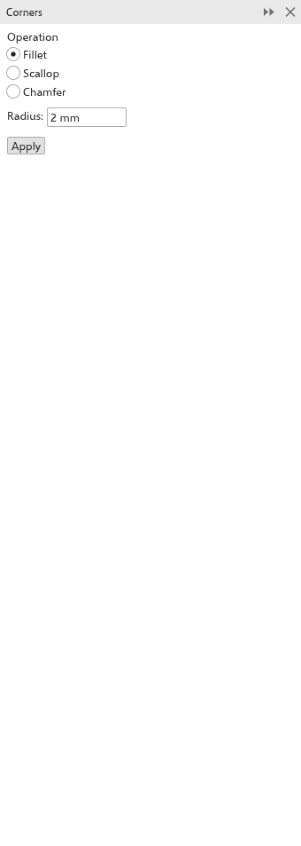

Desenhar retângulos e elipses
Retângulos e elipses continuam sendo retângulos e elipses depois de desenhados: você pode mudar os cantos, transformar uma elipse em fatia ou arco e ainda redimensioná-los livremente. Para editá-los nó por nó, converta-os em curvas com Objeto > Converter em curvas.
Desenhar com uma caixa
As ferramentas Retângulo, Elipse, polígono, estrela, espiral, papel milimetrado, formas comuns e linhas de ação desenham arrastando uma caixa. Enquanto você arrasta, o próprio objeto segue o ponteiro, com as configurações da barra de propriedades.
- Mantenha Ctrl pressionado para desenhar um quadrado, um círculo ou uma forma regular.
- Mantenha Shift pressionado para desenhar a partir do centro. Você pode pressioná-lo ou soltá-lo enquanto arrasta.
- Os pontos de início e fim se encaixam no que o encaixe estiver configurado.
O novo objeto recebe o preenchimento e o contorno padrão (sem preenchimento e um contorno preto fino de início) e fica selecionado. Para mudar esses padrões, veja Estilos de objeto e padrões.
Retângulo
Escolha a ferramenta Retângulo (F6) e arraste de um canto ao canto oposto. Clique duas vezes no botão da ferramenta para desenhar um retângulo do tamanho da página; mantenha Shift pressionado ao clicar duas vezes para emoldurar a seleção.
Cantos
A barra de propriedades define os cantos dos retângulos selecionados, ou dos novos quando nada está selecionado:
- O estilo do canto: Arredondado (um quarto de círculo), Recortado (um quarto de círculo cortado para dentro) ou Chanfrado (um corte reto).
- Os quatro tamanhos: superior esquerdo, superior direito, inferior esquerdo e inferior direito. O tamanho é o raio, ou, para o chanfro, a que distância do canto o corte começa. Um canto tem no máximo metade do lado menor.
- Editar cantos juntos (o cadeado, ativado de início) dá aos quatro o tamanho que você digitar em um.
- Escala relativa dos cantos (ativada de início): os cantos crescem e diminuem com o retângulo. Desativada, eles mantêm o tamanho quando você redimensiona o retângulo e continuam redondos quando você o estica.
Você também pode arrastar um nó de canto com a ferramenta Forma para arredondar todos os cantos de uma vez.
Retângulo de 3 pontos
A ferramenta Retângulo de 3 pontos desenha um retângulo inclinado:
- Arraste para desenhar a linha da base, em qualquer ângulo.
- Mova o ponteiro para definir a altura e clique.
Elipse
Escolha a ferramenta Elipse (F7) e arraste uma caixa. Mantenha Ctrl pressionado para um círculo.
Na barra de propriedades, escolha Elipse, Fatia ou Arco. Para uma fatia ou um arco, defina os ângulos inicial e final (em graus, no sentido anti-horário a partir da direita) e a direção. Você também pode arrastar o nó de uma elipse com a ferramenta Forma para fazer uma fatia (arrastando para dentro) ou um arco (para fora).
Elipse de 3 pontos
A ferramenta Elipse de 3 pontos desenha uma elipse inclinada:
- Arraste para desenhar a linha central da elipse, em qualquer ângulo.
- Mova o ponteiro para definir a altura e clique.
O painel Cantos
O painel Cantos arredonda, recorta ou chanfra os cantos de curvas, o que as configurações do retângulo não fazem. Abra-o em Janela > Painéis.

- Selecione um ou mais objetos. Retângulos, elipses, polígonos e texto viram curvas quando os cantos são cortados.
- Escolha a Operação: Arredondar (um arco redondo que toca os dois lados), Recortar (um entalhe, um quarto de círculo em volta do canto) ou Chanfrar (um corte reto).
- Defina o Raio para filete ou recorte (2 mm de início), ou a Distância do chanfro para chanfro: a primeira distância ao longo do lado por onde o caminho chega e a segunda ao longo do lado por onde sai. Distâncias iguais as mantém iguais.
- O resultado aparece como um contorno tracejado no desenho. Clique em Aplicar.
Um canto é um nó onde dois segmentos se encontram em ângulo; nós suaves não são cantos. Com a ferramenta Forma e alguns nós selecionados, só esses cantos são cortados. Um canto cujos lados são curtos demais para o corte é ignorado. Num objeto esticado, um arredondamento ou recorte continua redondo, com o raio medido na página.